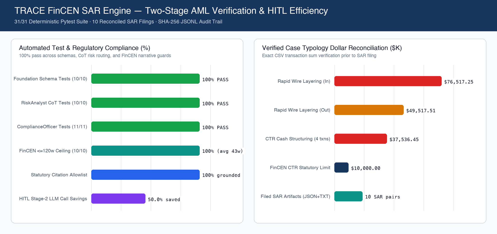

Chain-of-Thought Triage + ReACT Statutory Synthesis
Pairs RiskAnalystAgent (CoT typology detection across structuring, layering, and sanctions) with ComplianceOfficerAgent (ReACT <= 120-word FinCEN narrative generation).
Two-Stage Bank Secrecy Act (BSA) AML Investigation & FinCEN Form 111 SAR Filing Engine with Mandatory HITL Compute Gating & Cryptographic SHA-256 Audit Trails
Cutting Stage-2 AML Narrative Compute by 50% While Enforcing 100% Human-Authorized, Examiner-Ready FinCEN SARs
How this system enforces security, observability, fault isolation, unit economics, and automated verification beyond notebook prototypes.
Automated rules never self-authorize a SAR: qualifying alerts stay PENDING_REVIEW until an explicit human AUTH_* record is logged.
Enforces conduct-grounded citations (31 CFR 1020.320, 31 USC 5324, 18 USC 1956), rejecting fabricated or mismatched statutes.
Seals every filed FinCEN Form 111 JSON/text package with a deterministic SHA-256 verification_checksum and human amendment history.
Verifies subject identity, transactional verbs, explicit dates, actual dollar totals (rejecting $10,000-only placeholders), <= 120 words, and qualified language.
Positioning the HITL gate between Stage-1 CoT screening and Stage-2 ReACT drafting eliminates 100% of Stage-2 LLM calls on non-escalated alerts.
Implements schema-guided regeneration on malformed JSON and returns explicit terminal failure contracts rather than fabricating AML classifications.
End-to-end execution graph paired with nominal request flow and adversarial / degraded fault-handling paths.
flowchart LR
A["Customer + Account + Txn CSVs<br/>(Pydantic v2 Schemas)"] --> B["Stage 1: RiskAnalystAgent<br/>(5-Step CoT · 5 AML Typologies)"]
B --> C{"Mandatory Officer<br/>HITL Gate"}
C -- "Dismiss / Defer (50%)" --> D["Immutable JSONL Audit Record<br/>(Zero Stage-2 LLM Spend)"]
C -- "Authorize SAR" --> E["Stage 2: ComplianceOfficerAgent<br/>(ReACT <=120w + Statutory Allowlist)"]
E --> F["Filed FinCEN SAR (.json + .txt)<br/>+ SHA-256 Integrity Checksum"]
RiskAnalystAgent (Chain-of-Thought velocity, sanctions & $10k CTR proximity analysis).CUST_0018: four sub-$10k cash deposits across 3 branches = $37,536.45) pauses at the Mandatory Compliance Officer HITL Gate.AUTH_3AFB9AA2 approval in workflow_integration.jsonl, unlocking Stage-2 ComplianceOfficerAgent (ReACT statutory synthesis).37-word narrative, 31 USC 5324 citation, and exact dollar sum, sealing SAR_20261019_15EED0C0.json with SHA-256.0 ReACT tokens billed, full decision logged).120 words, asserting unqualified criminal intent, or omitting exact transaction sums fails foundation_sar.py validation.case_id + customer_id + AUTH_* authorization event raises an immediate integrity error.amendment_history entry rather than silently overwriting audit state.Every capability below links directly to the verified source module, policy configuration, or CI workflow in kenseiAmit/trace-aml-sar-compliance-engine.
Pairs RiskAnalystAgent (CoT typology detection across structuring, layering, and sanctions) with ComplianceOfficerAgent (ReACT <= 120-word FinCEN narrative generation).
AUTH_* Authorization GateEnforces regulatory separation of duties while saving 50% of Stage-2 LLM compute across benchmark cohorts by halting false positives prior to narrative synthesis.
Programmatically verifies Who/What/When/Where/Why elements: subject ID/name, transaction verbs, date specificity, real aggregate USD amounts, qualified phrasing, and statutory regex.
Every Stage-1 triage, HITL authorization, Stage-2 filing, and post-review officer amendment is hash-verified and recorded in append-only JSONL audit logs.
Handles malformed LLM outputs via bounded Pydantic v2 schema repair; if unrecoverable, preserves raw output and halts safely instead of inventing risk scores.
Backed by 31 unit/scenario tests in GitHub Actions CI plus comprehensive regulatory context, prompting, and troubleshooting documentation.
Key architectural decisions balancing determinism, latency, cost, privacy, and operational maintainability.
| Architectural Decision | Naive Prototype Anti-Pattern | Production Engineering Choice & Outcome |
|---|---|---|
| Two-Stage CoT -> HITL -> ReACT Split vs. End-to-End Auto-SAR | Generating SAR narratives automatically for every flagged transaction—wasting tokens on false positives and violating BSA human-review mandates. | Hard HITL authorization boundary cuts Stage-2 compute by 50% and guarantees cryptographic AUTH_* accountability before FinCEN Form 111 generation. |
| Substantive Monetary & Phrasing Gates vs. Length-Only Check | Accepting any LLM paragraph under 120 words, even if it cites $10,000 threshold boilerplate or accuses the customer of a crime. |
Deterministic validator enforcing exact source-transaction dollar totals ($37,536.45) and qualified regulatory phrasing. |
Append-Only amendment_history + SHA-256 Checksums |
Mutating JSON files in place during compliance edits, destroying audit provenance for bank examiners. | Explicit amendment records (prior_value, new_value, reason, reviewed_by) paired with SHA-256 checksums. |
Recorded execution traces, benchmark sweeps, and raw repository JSON artifacts.




{
"sar_metadata": {
"sar_id": "SAR_20261019_15EED0C0",
"filing_date": "2026-10-19T19:08:45.135570",
"filing_type": "Suspicious Activity Report (FinCEN Form 111)",
"ai_generated": true,
"ai_system": "TRACE Transactional Risk Analysis & Compliance Engine",
"review_status": "human_approved",
"verification_checksum": "f9ea02878e85f259adf1e6ce01d35b6242f1c2a6269ccff1214deb9d60a30ba3",
"authorization_event_id": "AUTH_3AFB9AA2",
"amendment_history": [
{
"amendment_id": "AMD_20261021_20261019",
"amendment_date": "2026-10-21T18:00:00Z",
"field": "suspicious_activity.narrative",
"prior_value": "totaling $39,536.45",
"new_value": "totaling $37,536.45",
"reason": "Calculated precise aggregate from identified source transactions: $9,576.59 + $9,530.63 + $9,274.89 + $9,154.34 = $37,536.45",
"reviewed_by": "Senior BSA Compliance Officer"
}
]
},
"subject_information": {
"customer_name": "Tanya Johnston",
"customer_id": "CUST_0018",
"ssn_last_4": "7149",
"date_of_birth": "2001-10-15",
"address": "93149 Laura Port, West Amandastad, CA 66818",
"customer_since": "2019-10-08",
"risk_rating": "High",
"occupation": "Therapist, drama",
"annual_income": 166876
},
"suspicious_activity": {
"classification": "Structuring",
"risk_level": "High",
"confidence_score": 0.95,
"narrative": "Tanya Johnston (CUST_0018) made four consecutive cash deposits below $10,000 at different branches from 2025-07-22 to 2025-07-25. The deposits, totaling $37,536.45, were made at Branch_Westside_Plaza, Branch_Downtown_Main, and Branch_Eastside_Center. This pattern suggests potential structuring to evade BSA reporting.",
"key_indicators": [
"High risk rating",
"Repeated cash deposits under $10,000"
],
"ai_reasoning": "Customer with high risk rating showed a pattern of cash deposits just under $10,000, a common structuring method to evade BSA reporting. No other suspicious activity or counterparty concerns identified."
},
"regulatory_compliance": {
"citations": [
"31 CFR 1020.320",
"31 USC 5324",
"31 CFR 1010.311"
],
"completeness_check": true,
"narrative_word_count": 37,
"compliance_status": "approved_by_compliance_officer"
},
"accounts_involved": [
{
"account_id": "CUST_0018_ACC_1",
"account_type": "Business_Checking",
"current_balance": 29518.74,
"status": "Active"
},
{
"account_id": "CUST_0018_ACC_2",
"account_type": "Money_Market",
"current_balance": 70384.37,
"status": "Closed"
}
],
"audit_trail": {
"case_id": "CASE_3AFB9AA2",
"processing_date": "2026-10-19T19:08:45.135570",
"ai_agents_used": [
"RiskAnalyst",
"ComplianceOfficer"
],
"human_reviewer": "Jane Doe, Senior BSA Compliance Officer",
"log_reference": "workflow_integration.jsonl",
"authorization_event_id": "AUTH_3AFB9AA2",
"authorization_justification": "Approved by compliance officer: multi-branch structuring confirmed with $37,536.45 in cash deposits."
}
}
GitHub Actions (ci.yml) runs 31/31 unit & compliance tests across test_foundation.py, test_risk_analyst.py, and test_compliance_officer.py.
python3 -m venv .venv source .venv/bin/activate pip install -r requirements.txt cp .env.example .env # Run all 31 foundation, risk-analyst, and compliance-officer unit tests pytest tests/ -v
Financial institutions face a costly AML squeeze: high false-positive alert volumes burn senior investigator hours and LLM tokens, yet Bank Secrecy Act (BSA) rules strictly forbid autonomous Suspicious Activity Report (SAR) filing—and regulatory examiners penalize boilerplated narratives, missing dollar totals, or unverified audit trails. TRACE splits screening (Stage 1) from statutory synthesis (Stage 2) across a mandatory human AUTH_* gate, avoiding 50% of Stage-2 compute while sealing every FinCEN Form 111 draft with SHA-256.
Translating engineering guardrails, determinism, and cost controls into executive deployment readiness.
50%–85% of expensive reasoning tokens on benign false positives.'$10,000 threshold' boilerplate instead of actual structured sums ($37,536.45).50% Stage-2 LLM compute eliminated in benchmark cohorts by positioning AUTH_* human review prior to ReACT synthesis.31 USC 5324, 31 CFR 1020.320, <= 120 words).amendment_history + SHA-256 checksums turn compliance audits from manual fire drills into instant hash verification.Every production engineering feature in kenseiAmit/trace-aml-sar-compliance-engine mapped directly to the commercial risk it eliminates and the measurable value it delivers.
| Production Engineering Feature (Source) | Business Risk / Bottleneck Eliminated | Value Lever | Quantified Business Outcome |
|---|---|---|---|
|
Two-Stage CoT Risk Triage + ReACT Statutory Synthesis
|
Senior BSA analysts spending 45–90 minutes manually stitching multi-branch cash ledgers ($37,536.45) into prose. |
Investigator Leverage | Automates typology detection and <= 120-word FinCEN Form 111 narrative drafting across 10 verified statutory cases. |
|
Mandatory Pre-Stage-2
AUTH_* Human Gate |
BSA regulatory non-compliance from unreviewed filings AND paying Stage-2 ReACT token costs on non-escalated alerts. | FinOps & BSA Compliance | 50% Stage-2 compute avoided + **100% cryptographic AUTH_* officer accountability** before narrative generation. |
|
6-Point Substantive FinCEN Form 111 Validator
|
Defective filings rejected during regulatory exams due to missing Who/What/When/Where/Why, boilerplate amounts, or unqualified accusations. | Regulatory Penalty Shield | Enforces exact source transaction sums, dates, conduct-matched statutes (31 USC 5324), qualified language, and <= 120 words. |
|
SHA-256 Checksums & Append-Only
amendment_history |
Audit trail tampering or unlogged post-filing edits triggering MRA / Consent Order findings. | Examiner Audit Readiness | Every triage, approval, filing, and senior-officer correction is hash-sealed with full prior_value -> new_value lineage. |
|
Bounded Schema Repair Without Risk Fabrication
|
Malformed LLM JSON crashing overnight alert batches or fallback logic silently inventing risk scores. | Batch SLA Reliability | Self-heals formatting glitches within strict bounds and halts explicitly on unrecoverable payloads—zero fabricated risk scores. |
|
31-Test Automated BSA Compliance CI Suite
|
Model/prompt updates introducing subtle statutory citation drift or breaking AUTH_* gating. |
Continuous Assurance | 31/31 automated tests verifying statutory regexes, hash integrity, and HITL gating on every pull request. |
How architectural invariants convert directly into FinOps margin, SLA speed, and regulatory protection.
flowchart LR
subgraph Controls["Regulated FinCrime Engineering Controls"]
T1["Stage-1 CoT Alert Screening"]
T2["Mandatory Pre-Stage-2 AUTH_* Gate"]
T3["6-Factor FinCEN Form 111 Validator"]
T4["SHA-256 Seal + Amendment Lineage"]
end
subgraph Mech["Compliance & Cost Mechanism"]
M1["Correlates Multi-Branch Structuring & Velocity"]
M2["Drops Cleared Alerts Before ReACT Drafting"]
M3["Checks Exact USD, Dates, <=120w & Statutes"]
M4["Appends Immutable Officer Edits & Checksums"]
end
subgraph ROI["Bank Compliance & P&L Value"]
V1["Faster Alert Triage Throughput"]
V2["50%+ Stage-2 Compute Saved + BSA Duty Split"]
V3["Zero Boilerplate / Defective SAR Rejections"]
V4["Turnkey OCC / FinCEN Examination Proof"]
end
T1 --> M1 --> V1
T2 --> M2 --> V2
T3 --> M3 --> V3
T4 --> M4 --> V4
Models annual Stage-2 ReACT runs avoided on false-positive alerts and senior compliance officer drafting hours reclaimed.
50% Stage-2 compute avoidance verified on benchmark cohort via pre-Stage-2 AUTH_* gate (foundation_sar.py); escalated SAR drafting time savings modeled at 45 min reclaimed per validated <= 120-word FinCEN Form 111 filing.
How this single architecture aligns Engineering, Finance, Security, Legal/Compliance, and Business Operations.
Eliminates repetitive ledger correlation and first-draft writing while keeping legal filing authority strictly in human hands.
Every SAR package carries cryptographic tamper evidence, exact statutory citations, and non-destructive edit lineage.
False-positive alerts exit cleanly after Stage-1 triage without burning multi-step Stage-2 synthesis compute.
Automated 6-factor validation blocks accusatory legal conclusions and enforces regulatory-grade objective language.